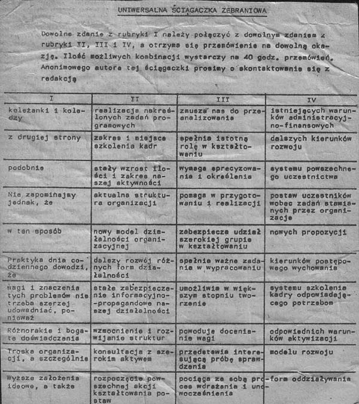

Uniwersalny kod przemówień został nadesłany w pierwszej połowie lat 80-tych do „Polityki” przez anonimowego autora,
kiedy ta jeszcze wychodziła w formacie gazetowym. Autor, mimo próśb redakcji , nie zgłosił się po honorarium.
Twoja wygenerowana wypowiedź:
